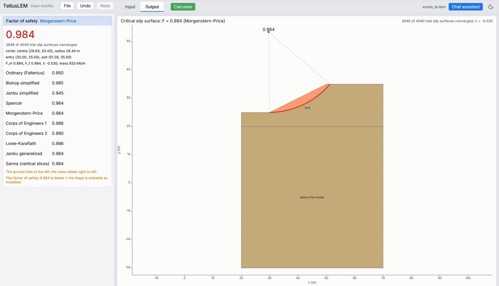
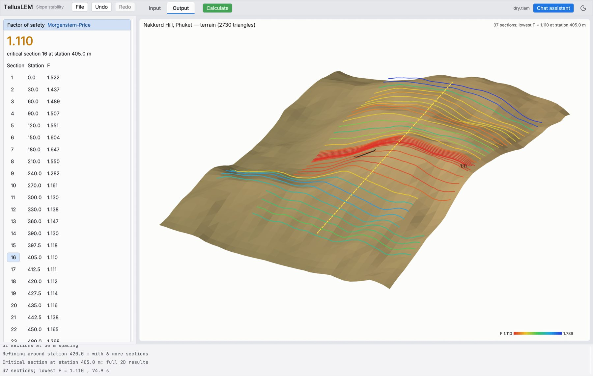
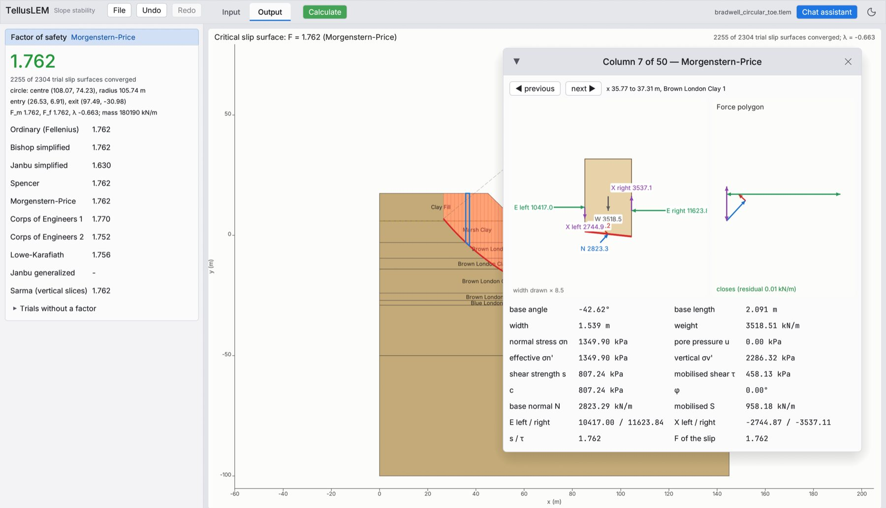

Ten methods
General limit equilibrium with Ordinary, Bishop, Janbu, Spencer, Morgenstern–Price, Corps of Engineers, Lowe–Karafiath, Janbu generalized and Sarma.
Limit equilibrium · v0.1.0
TellusLEM analyses slopes by ten methods of slices, searches circular and non-circular slip surfaces, cuts sections from 3D terrain, and exposes the whole workflow to AI agents through the Model Context Protocol.
General limit equilibrium with Ordinary, Bishop, Janbu, Spencer, Morgenstern–Price, Corps of Engineers, Lowe–Karafiath, Janbu generalized and Sarma.
Grid, entry–exit, block and metaheuristic searches with shape optimisation, guarded by concavity, mα, λ-root and interslice-tension rules.
Piezometric lines with the phreatic correction, ru, B̄, kriged pore pressures, ponded water, and suction in unsaturated soil.
Duncan–Wright–Wong rapid drawdown, staged pseudo-static, Monte Carlo and Latin hypercube, Newmark displacement, partial factors.
Import LandXML, DXF, XYZ, OBJ or STL, cut sections at any spacing, and let the program find the critical one.
One scene description drawn on screen, as SVG and as a vector PDF report, with the free body of every column.
Model Context Protocol
Every modelling step is a tool. Any MCP client can drive TellusLEM locally over stdio or remotely over Streamable HTTP, and every change returns a check, so the agent sees what it built. The built-in chat runs an agent on the same tools.
# Claude Code, local claude mcp add -s user tellus-lem -- tellus-lem --mcp # a shared server for remote agents tellus-lem --mcp --http 0.0.0.0:8787 --token $TMCP setup for every client →



Calibration and verification
Closed-form solutions, the SLOPE/W reference book, 27 benchmark problems and 12 case histories, each compared with the published value and an independent Slide2 result. The cases that disagree are reported with their causes.
Read the paper →TellusLEM: Agentic Limit Equilibrium Software and Its Calibration · doi:10.5281/zenodo.23582071
The macOS app is ad-hoc signed: right-click and choose Open the first time. The chat uses OpenRouter with your own key.
Read the user manual →